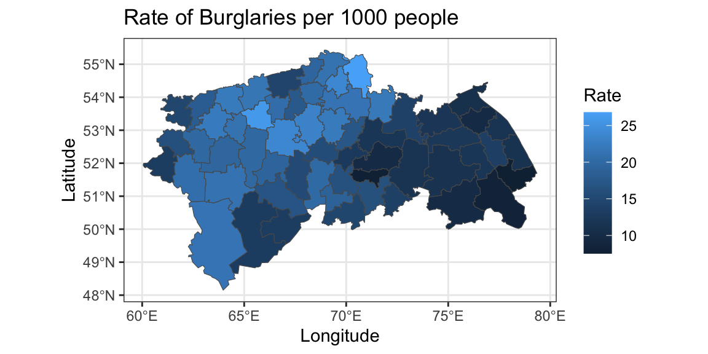
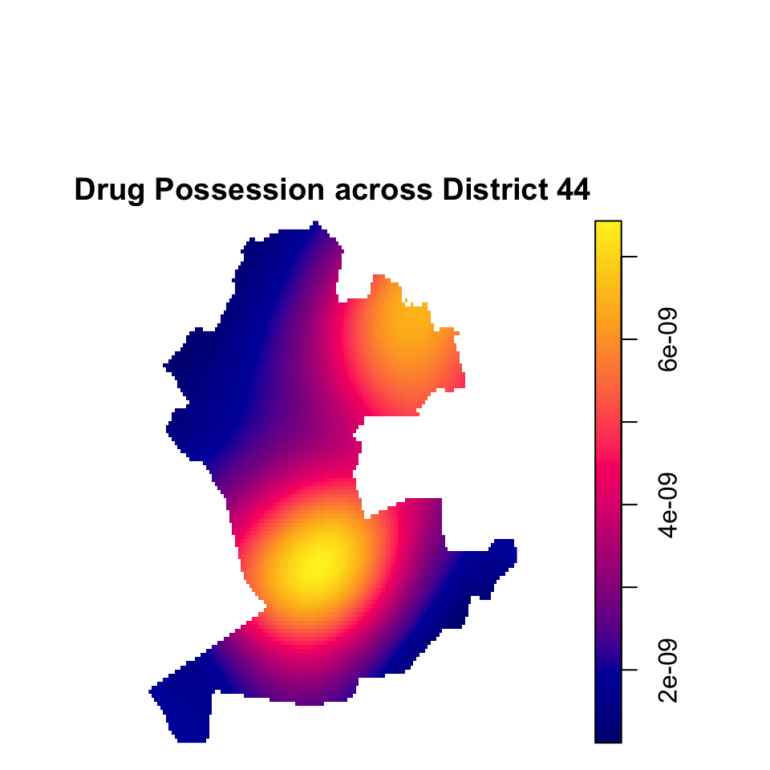
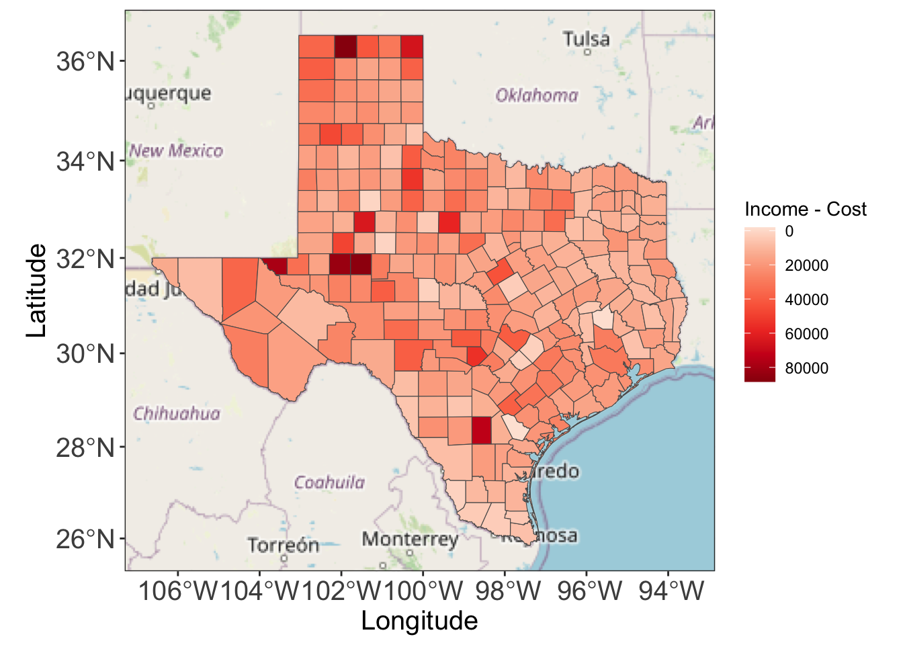

library( dplyr )
library( ggplot2 )
library( tidyr )
library( sf )
library( ggspatial )
library( prettymapr )
library( spatstat )
library( raster )MA22019 2025 - Solutions for Computer Lab 9
Mise en place
Lab
Solutions
You may want to load the following packages before starting the exercise:
When working on a University PC, you will have to first install some of these packages.
Tutorial Question 1 - Crime across Utopia
Utopia’s police department needs your help with analyzing their 2015-2021 data regarding certain crimes. The data is provided in the file “UtopiaCrimes.csv”. Note, longitude and latitude coordinates are only available for drug possession offences across District 44.
Utopia consists of 59 districts and a shapefile of Utopia is provided as “UtopiaShapefile.shp”. To hide Utopia’s location, constants have been added to the latitude and longitude coordinates, but the shapes they define are correct. The population for each district is provided in the file “UtopiaPopulation.csv”.
- Identify the three most common crimes in Utopia for the period 2015-2021.
To extract the three most common crimes, we only need to consider in “UtopiaCrimes.csv”
Crimes <- read.csv( "data/UtopiaCrimes.csv" )We then count the number of incidents for each crime category
Crimes %>%
count( Category, sort=TRUE ) %>%
slice_head( n=3 ) Category n
1 Burglary 16513
2 Drug Possession 10551
3 Assault 10169We find that burglaries, drug possession and assault were the most common crimes for 2015-2021.
- Visualize the rate per 1,000 population for the most common crime for 2015-2021 for the different districts. What do you conclude from your plot?
Given the results in part a), we have to create a map for burglaries. We start by calculating the number of burglaries for each district:
Burglaries <- Crimes %>%
filter( Category == "Burglary" ) %>%
count( District )We then derive the number of cases per 1,000 population for each district
Population <- read.csv( "data/UtopiaPopulation.csv" )
Burglaries <- Burglaries %>%
inner_join( Population, by="District" ) %>%
mutate( Rate = 1000 * n / Population )We next load the shape file
Utopia <- read_sf( "Shapefiles/UtopiaShapefile.shp" )Finally, we add the calculated rate of burglaries to the data frame provided by the shapefile and visualize the lattice data
Utopia <- Utopia %>% inner_join( Burglaries, by=c("NAME_1"="District") )
ggplot( Utopia, aes(fill=Rate) ) + geom_sf() + theme_bw() +
labs( title="Rate of Burglaries per 1000 people",
x="Longitude", y="Latitude", fill="Rate" )
The plot reveals that northern / north-western Utopia is worst affected in terms of the rate of burglaries.
- You are told that District 44 is notorious for drug possession. The police is planning to conduct a raid to tackle the issue, but they are unsure which areas of the district are the most seriously affected. Use spatial data analysis techniques to identify the parts of District 44 they should be focusing on. Hint: You may want to consider the function st_reverse() should you get an error message regarding orientation/direction.
To address this question, we have to perform point pattern analysis. We start by filtering out the observations of drug possession for District 44 and we only consider the two most recent years:
District44_Drugs <- filter( Crimes, Category == "Drug Possession",
District == "District 44", Year>=2020 )We next extract the shapefile for District 44 and define a ppp object. We introduced two methods and the code for both is provided below. Option 1 is to use the approach from Section 4.6.2 in the lecture notes, but here we need to use the function st_reserve() to make it work:
District44 <- filter( Utopia, NAME_1 == "District 44" )
District44 <- st_reverse( District44 )
District44_ppp <- ppp( District44_Drugs$Longitude, District44_Drugs$Latitude,
poly = District44$geometry[[1]][[1]] )The second option is to employ the approach in Section 4.6.4 - the approaches give a different scale in terms of values, but the conclusions are identical (so you use whichever you prefer):
Drugs_transformed <- District44_Drugs %>%
st_as_sf( coords=c("Longitude","Latitude"), crs=4326 ) %>%
st_transform( crs=3857 ) %>%
st_coordinates( )
District44 <- District44 %>% st_transform( crs=3857 )
District44_ppp <- ppp( Drugs_transformed[,1],
Drugs_transformed[,2],
window = as.owin(District44) )Finally, we estimate and plot the kernel smoothed intensity function to identify the area with the highest intensity
par( mai=c(0.01,0.01,0.5,0.01) )
plot( density.ppp(District44_ppp, edge = TRUE),
main="Drug Possession across District 44" )
The plot suggests that the police should focus on the centre of District 44 since this is the area with the highest intensity. There is also a second area in the north-east of District 44 where a raid may also be quite successful.
Tutorial Question 2 - Cost of living crisis in Texas
As many other countries around the world, the United States have seen high inflation over the past years. In the following we want to analyze socioeconomic data for the state of Texas. We have access to two data files:
“Cost_Texas.csv” gives the cost for essentials (food, rent, healthcare,etc.) in 2023 for a single household for each county in Texas based on the Family Budget Calculator by the Economic Policy Institute.
“Income_Texas.csv” gives the median income per capita for each county in Texas as reported by the Bureau of Economic Analysis of the US government for 2021.
Perform the following tasks and answer the research questions:
- Load the two data files and calculate the difference between median income and cost of living for each county.
We start by loading the two data sets
Cost_Texas <- read.csv("data/Cost_Texas.csv", fileEncoding = "UTF-8")
Income_Texas <- read.csv("data/Income Texas.csv", fileEncoding = "UTF-8")A look at the data reveals that the numbers on income include a comma, which prevents this variable from being recognized as a numerical variable. So we have to do some data cleaning first
Income <- Income_Texas %>%
mutate( Income.per.capita = gsub("\\,","",Income.per.capita) ) %>%
mutate( Income.per.capita = as.numeric(Income.per.capita) )We can now merge the two data sets based on county names:
Texas_money <- inner_join( Income, Cost_Texas, by=c("County"="county") )Finally, we can calculate the difference between income and cost as required:
Texas_money <- Texas_money %>% mutate( Diff = Income.per.capita - total_cost )- The file “Texas.Rdata” provides a shapefile of Texas, called Texas, with all county boundaries. Use the shapefile to create a map which visualizes the variable calculated in part a). What do you conclude?
We first load the shapefile for Texas
load( "Shapefiles/Texas.RData" )We can now attach the information retrieved in part a) to the data frame in Texas
TX <- inner_join( x=Texas, y=Texas_money, by="County" )The map can then, for instance, be created with ggspatial
ggplot( ) +
annotation_map_tile( zoom=5 ) +
geom_sf( data=TX, aes(fill=Diff) ) + theme_bw() +
scale_fill_distiller( palette="Reds", trans="reverse" ) +
theme( axis.title=element_text(size=15), axis.text=element_text(size=15) ) +
labs( x="Longitude", y="Latitude", fill="Income - Cost" )
We see quite a difference in values ranging from values around zero (the smallest value is about -1,900$), to over $80,000. So we would conclude that there are counties where the income of a single household is pretty much entirely spent on the essential costs, while there are some counties where people can continue saving.
- How reliable are our results found in part b)? Hint: You may want to extract the two counties with the highest median income and see what you find out about them on Wikipedia.
There are at least two aspects that may affect reliability. The first is that the income and cost data are not for the same year. So we should not conclude that the values are fully accurate, but they give some indications on which we can comment with some certainty. The second aspect is that the income data is for people working in that area, while the cost data is representative for people living in the area. Let’s retrieve the two counties with the highest difference:
slice_max( Texas_money, Income.per.capita, n=2 ) County Income.per.capita isMetro total_cost Diff
1 Midland 126738 TRUE 43795.24 82942.76
2 Glasscock 124963 FALSE 38365.05 86597.95We find that that the two counties with the highest median income are Midland and Glasscock, and these counties also have a difference above $80,000. Looking at Wikipedia, these two counties are centres of the oil industry in Texas. One feature of these jobs is that the people working in the oil industry are not necessarily living in that area permanently. Consequently, our analysis for these counties may biased due to this feature.